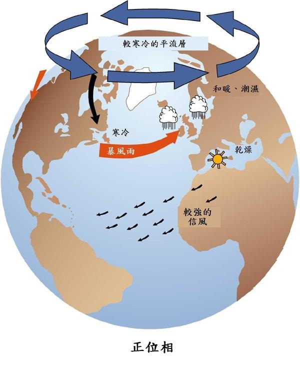
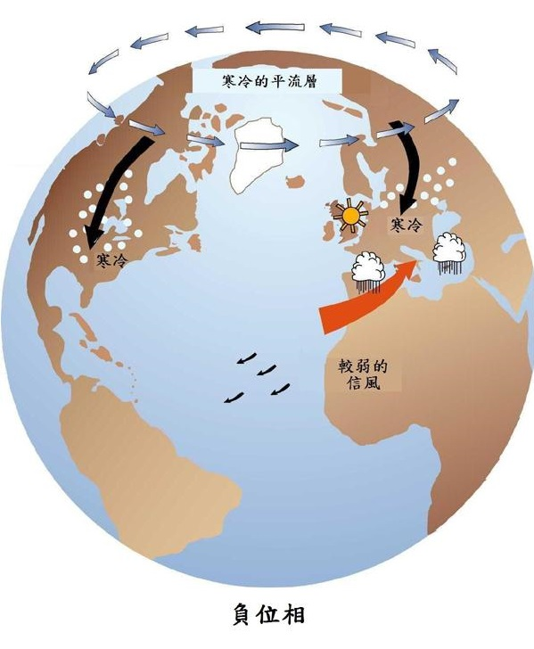
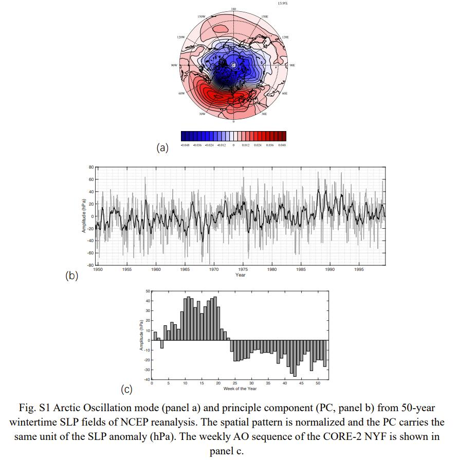

Arctic Oscillation (AO)
北极涛动
北极涛动（AO）是指北半球中纬度地区（约北纬45度）与北极地区气压形势差别的变化。它是一个代表北极地区大气环流的重要气候指数，可分为正位相和负位相。
北极通常受低气压系统支配，而高气压系统则位于中纬度地区。当AO处于正位相时，这些系统的气压差较正常强，围绕北极的一圈强风将寒冷的空气限制在极地地区，限制了极区冷空气向南扩展；当AO处于负位相时，这些系统的气压差较正常弱，这条风带变得更弱、更扭曲，冷空气较易向南侵袭，并增加了进入中纬度地区的风暴。
|  |  |
|---|
AO指数是通过将AO负荷模式投影到北纬20度以北的日异常1000毫巴高度场而获得的。利用多年月平均数据，选择AO加载模式作为EOF分析的主模态。
AO指数是关于北纬20度以北海平面气压的非季节性变化的主模态的序列，其计算涉及到EOF分析（Empirical Orthogonal Function analysis）。
EOF 分析
经验正交函数分析法（EOF分析），在地球物理科学中经常使用，目标是通过将时空数据集转化成空间模态（spatial patterns）变化率和与之联系的时间上的投影（时间序列）来简化时空数据集。这些空间模态就是EOFs，可以被看作是方差对应的基函数（空间中的一组基向量）。相关的时间投影是主要成分（pricipal components, PCs），是EOFs的时间系数。
EOF分析只是以方差对应的基对数据进行了新的表示。原始数据集完全可以由EOFs和PCs重建出来。但是在实践中，我们通常只对EOFs的一个子集感兴趣。单个的EOFs有时可能会有一个合理的物理解释与之对应，另外我们可能希望的是用有限的几个EOFs来重建原始数据集，这些EOFs可以根据对应的方差来选择。这个思想有点像反问题求解用的筛去小特征值。
数学描述
考虑一个数据集，该数据集由单个地球物理变量在空间 $x_1, x_2, …, x_M$ 的多个位置以及在 $t_1, t_2, …, t_N$ 的多个时间点的观测值组成。这些观测值可以用一个 $N \times M$ 的矩阵 $\mathbf{F}$ 来表示， $\mathbf{F}$ 的行是某个时间点上地图上所有观测点的观测值，列是某个地点在观测期内所有时间点的观测值。异常矩阵（anomaly matrix）$\mathbf{A}$ 是 $\mathbf{F}$ 矩阵中的每个元素减去时间均值（即各列均值）而得到的，每列的平均值为0。
$$
\mathbf{A} =\begin{pmatrix}
a_{1,1} & a_{1,2} & \cdots &a_{1,M} \\
a_{2,1} & a_{2,2} & \cdots &a_{2,M} \\
\vdots & \vdots & \ddots &\vdots \\
a_{N,1} & a_{N,2} & \cdots &a_{N,M}
\end{pmatrix}
$$
理论上首先计算协方差矩阵$\mathbf{R}=\mathbf{A}^T \mathbf{A}$，求解特征值问题
$$\mathbf{RC=C\Lambda}$$
其中 $\mathbf{C}$ 的列是特征向量（EOFs），特征值（EOF方差）在 $\Lambda$ 的主对角线上。然后，可以根据 $\mathbf{A}$ 在EOFs上的投影来计算PCs $\mathbf{P}$ ：
$$\mathbf{P=AC}$$
实际计算
先对 $\mathbf{A}$ 进行SVD分解，则右奇异向量为EOFs，左奇异向量为标准化的PCs。
因而所需的主PCs即为 $\mathbf{P}$ 的第一列，对应的 mod 为 EOFs $\mathbf{C}$ 的第一列，主模态解释了总方差的 $\lambda_1/\sum \lambda$。
使用eof包进行计算时，可能还需要对纬度进行加权。
参考页面：eof2
Wintertime Arctic oscillation(AO) index
以50年NCEP再分析资料的海平面气压（SLP）为基础，构造了冬季北极涛动（AO）指数，并应用于 NYF 数据集。具体而言，AO被定义为1950年至2000年冬季（11月至4月）北半球（20°N和北部）周平均SLP的经验正交函数（EOF）主模态。对50年SLP序列进行去趋势化处理，去除季节性周期进行EOF计算。主模态解释了13.9%的总方差，标准化空间模式（无单位）和主成分PC（时间序列）如图S1所示。NYF 数据集的冬季对应于总体中性AO状态，冬季每周AO指数（如封面所示 25 hPa）的变化率也与50年NCEP再分析数据的平均季节内变异性（如图S1b所示为22 hPa）相当。作为参考，NYF数据集的夏季AO为轻度负（图S1c）。
标准年份强迫（normal-year forcing，NYF）数据集是一个重复的年度周期数据集，它包含了强迫一个海冰耦合模式所需的一切。
猜测NCEP数据是只把每年的冬季序列取出来进行计算，然后平滑处理作为参考；然后再计算 NYF 数据集的 AOI，取冬季部分出来分析。根据该分析结果选择特定模拟日的结果进一步分析。
